看了大家的评论，还是有意外的收货。感谢每个小伙伴的评论与补充。
众人拾柴火焰高~
今天的笔记是记录python中的数据对象----字典！
前面有讲到list列表和tuple元组的笔记，他们都是一样可以用来储存对象。list列表是支持读写修改，tuple元组之支持读取，不可修改。但是他们有共同的特点，将单个的元素值，存储在列表或元组中，然后通过索引（元素下标）的方式去找到对应的元素，进行操作。
那么dictionaryt字典呢？它是什么数据结构?
字典这种数据结构被称为映射。字典中的值（value）没有特殊的顺序，但是这些值都存储在一个特定的键（key）下。我们可以通过键（key）找到对应的值。键（key）可以是数字、字符串或元组等。
就这么理解，和新华字典一样，通过拼音去找对应的字。~~~~就是这么个映射的意思。不要太较真。
我们先看下创建一个空字典：
1 dict_1 = {} #这就是一个空字典{}，用变量dict_1指向他.我们在创建一个有数据的字典： 下面的19，是数字对象。加引号就是字符串对象。具体加不加看你自己的用途，字典都是支持的~~~~
1 dict_1 = {'name':'Xiao Hong','age':19,'iphone':'110'} #创建第一个字典类型的数据
2
3
4 dict_2 = {'Xiao Hong':{'name':'Xiao Hong','age':19,'iphone':'110'}, #创建第二个字典类型的数据，还可以这样创建哦
5 'Xiao Jun':{'name':'Xiao Jun','age':16,'iphone':'117'}}我们发现：创建的第二个字典，它的键（key），对应的值（value）是另一个字典类。其实，字典对象的键（key）也是支持很多对象类型的，
最常用的就是数字和字符串类型作为键（key），因为查找对象的效率是最高的。
我相信你已经会根据以上结构去创建字典这样的映射结构了。接下来我们再创建一个新的字典，对它进行添加、修改、删除的操作。
为空字典，添加对象：
1 dict_1 = {} #创建一个空字典
2
3 dict_1['name'] = 'Xiao' #变量名【键】 = 【值】，直接赋值的方式添加对象
4 dict_1[1.34] = 'abc'
5 dict_1[100] = 'holle word'
6
7 print(dict_1) #查看添加对象的效果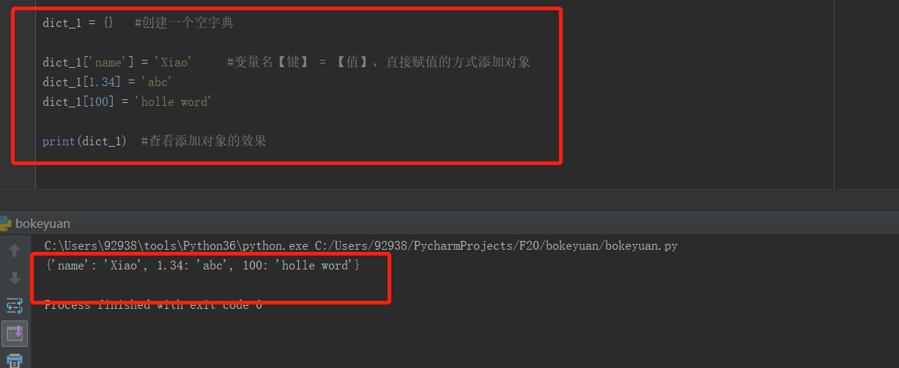
1 dict_1 = {} #创建一个空字典
2
3 dict_1['name'] = 'Xiao' #变量名【键】 = 【值】，直接赋值的方式添加对象
4 dict_1[1.34] = 'abc'
5 print(dict_1) #查看添加对象的效果
6
7 dict_1['name'] = 'hhh' #将'name': ['Xiao'] 改为：'name': ['hhh']
8 print(dict_1) #查看修改后对象的效果，做对比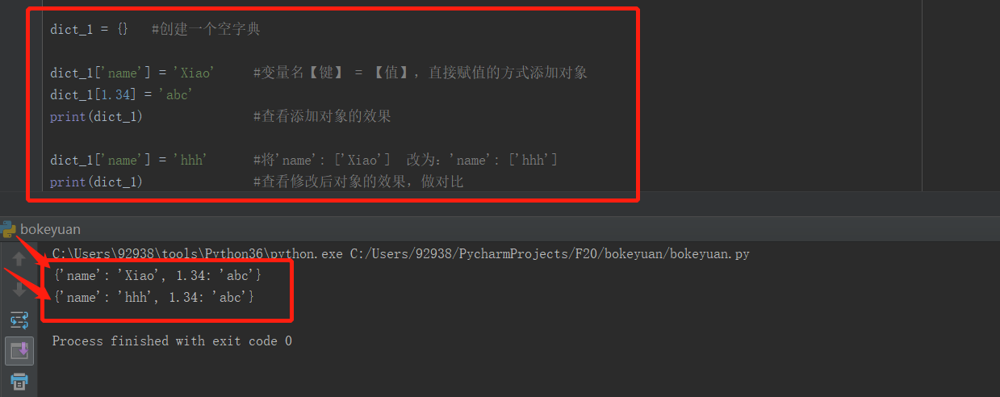
我们看到了添加和修改，我要搞清楚一个概念，如果在我们赋值操作的时候，键（key）在字典中是不存在的，呢么就是添加对象；如果在我们赋值的时候，键（key）是本身字典就有同名的键（key），那就是修改。
如果说我们添加的时候不知道里面有没有同名的键（key），我们可以这样检查一下键（key）是不是在字典中已经存在：
1 dict_1 = {'name':'Xiao Hong','age':19,'iphone':'110'}
2
3 print('name' in dict_1) #要查询的格式 键 in关键字 字典对象（变量名）
4 print('hhh' in dict_1) #返回True就是存在，返回的False则是不存在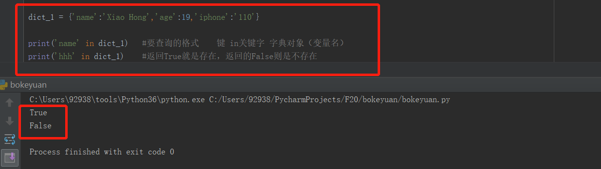
当然也可以使用这个方法：
has_key() 可以检查当前字典中键是否存在，但是！！！python3中没有这个方法啦，所以不再举例了，用第一种 in关键字就好了.。
我们再看下删除字典中的一个元素，代码怎么实现：
1 dict_1 = {'name':'Xiao Hong','age':19,'iphone':'110'}
2 print(dict_1) #删除之前
3
4 del dict_1['age'] #del关键字
5 print(dict_1) #删除之后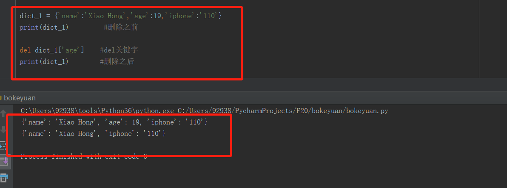
也可以这样删除字典中的元素：
1 dict_1 = {'name':'Xiao Hong','age':19,'iphone':'110'}
2 print(dict_1) #删除之前
3
4 a = dict_1.pop('name') #pop()方法，删除字典元素的时候，将键对应的值返回给了变量。
5 print(dict_1) #删除之后
6 print(a) #我们看下变量a有没有指向删除的值 'Xiao Hong'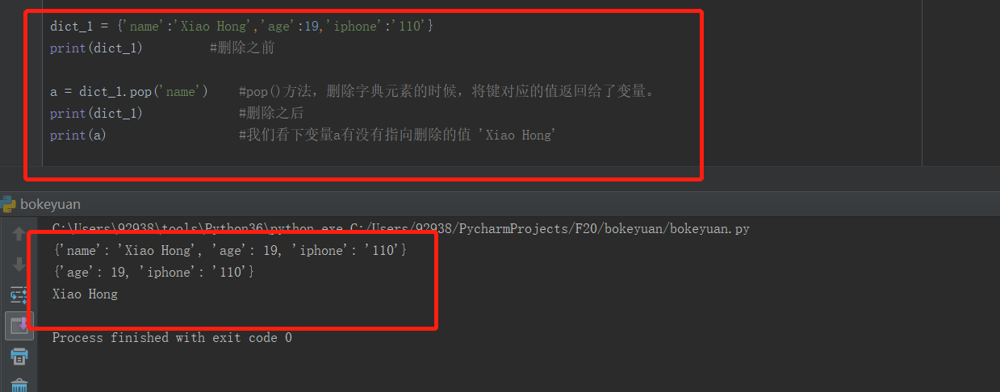
我看的pop()方法，删除字典元素的时候，将键对应的值返回给了变量。
有时候我们会遍历字典中的键：
使用 keys() 方法：
1 dict_1 = {'name':'Xiao Hong',
2 'age':'19',
3 'iphone':'110'} #我们创建的字典对象
4
5 for key in dict_1.keys(): #遍历字典中的键key
6 print(key,end= ' ') # end=' '意思是末尾不换行，加空格。
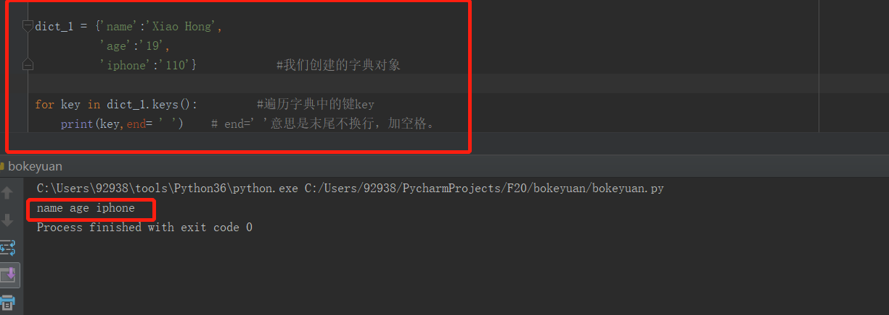
同样的，我们也可以遍历字典中的所有值：
使用values() 方法：
1 dict_1 = {'name':'Xiao Hong',
2 'age':'19',
3 'iphone':'110'} #我们创建的字典对象
4
5 for value in dict_1.values(): #遍历字典中的值value
6 print(value,end= ' ') # end=' '意思是末尾不换行，加空格。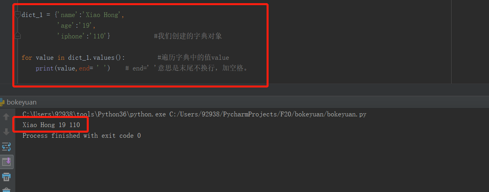
有时候我们会同时遍历字典中的键和值，这个需要用到字典中的items() 方法：
items() 方法： 它可以同时获取key和value 我们看下代码的实现：
1 dict_1 = {'name':'Xiao Hong',
2 'age':'19',
3 'iphone':'110'} #我们创建的字典对象
4
5 for key,value in dict_1.items(): #用 items()函数，同时遍历键和值
6 print(key,value,end= '') #打印键和值，end=' '意思是末尾不换行，加空格。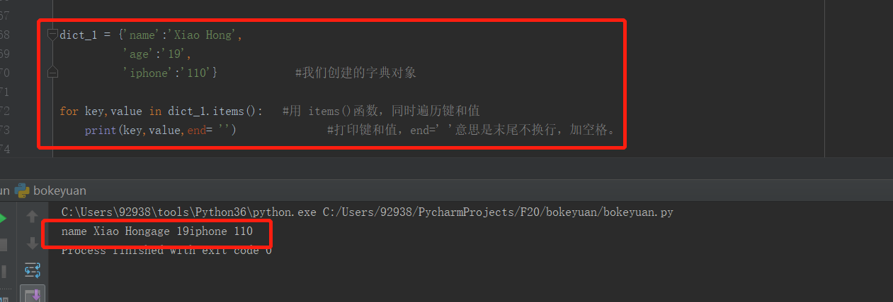
1 dict_1 = {'name':'Xiao Hong',
2 'age':'19',
3 'iphone':'110'} #我们创建的字典对象
4
5 print(dict_1.get('name')) #我们可以使用get()方法获取字典的值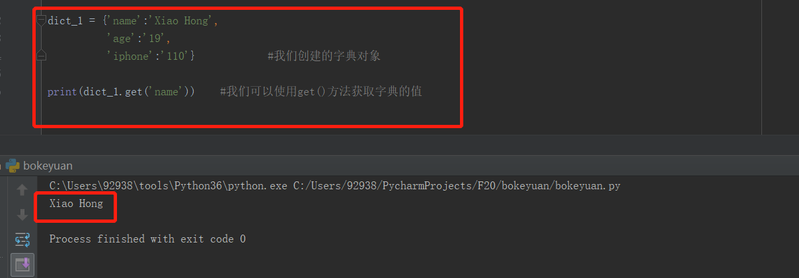
字典的合并，就是将两个字典合并在一起
update() 需要注意的是：如果被合并的字典中包含已经存在的键值对，会覆盖原有的键值对。
1 dict_1 = {'name_1':'Xiao Hong',
2 'age':'19',
3 'iphone':'110'} #第一个字典
4
5 print(dict_1) #合并之前
6 dict_2 = {'name_2':'Xiao JUN',
7 'age':'19',
8 'iphone':'110'} #第二个字典
9
10 dict_1.update(dict_2) #将dict_2合并在dict_1字典中。
11 print(dict_1) #合并之后的dict_1字典，注意重复的键值对会被覆盖掉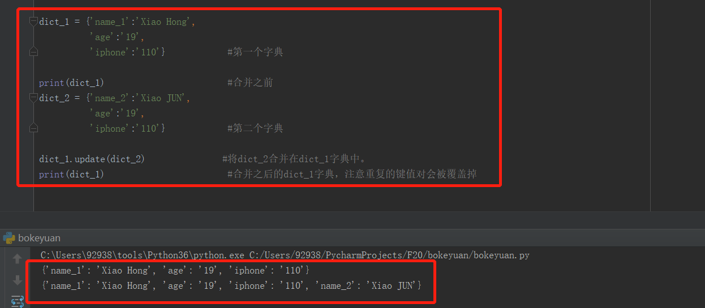
清空字典用clear() 方法：
1 dict_1 = {'name_1':'Xiao Hong',
2 'age':'19',
3 'iphone':'110'} #创建一个字典
4
5 print(dict_1) #清空之前
6 print(dict_1.clear()) #清空并打印结果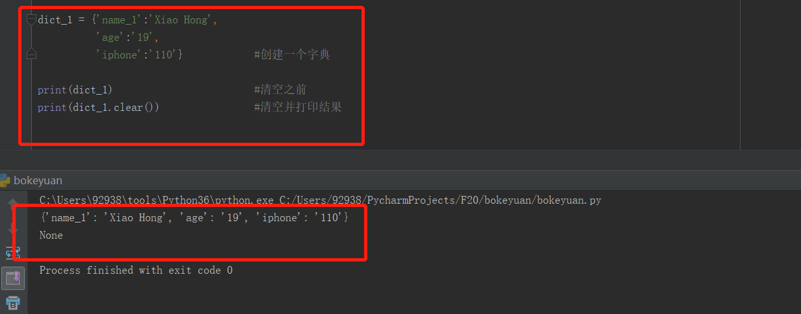
字典还有很多方法，后面的笔记，遇见不同的场景，处理字典的时候我们在详细分析记录。